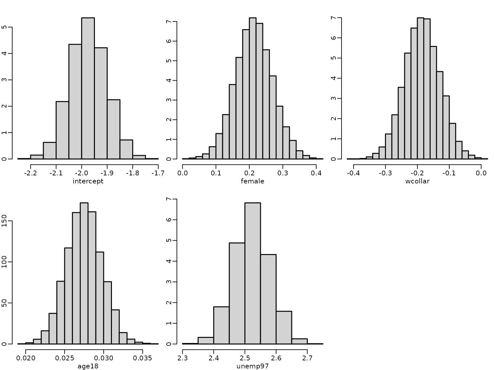

Chapter 8: Bayesian Learning Beyond Standard Regression Analysis
Chapter08.RmdSection 8.1
We illustrate probit regression analysis for the labor market data.
library("BayesianLearningCode")
data("labor", package = "BayesianLearningCode")We model the binary variable unemployment and use as covariates the variables female (binary), wcollar (binary), age18 (quantitative, centered at 18 years) and unemployed in 1997 (binary).
y <- labor$unemp98
N <- length(y) # number of observations
X <- cbind("intercept" = rep(1, N), "female"=labor$female,"age18"=labor$age-18,
"wcollar"=labor$wcollar, "unemp97"=labor$unemp97) # regressor matrixThe regression coefficients are estimated using data augmentation and Gibbs sampling.
probit <- function(y, X, b0 = 0, B0 = 10000,
burnin = 1000L, M = 5000L) {
d <- dim(X)[2] # number regression effects
p <- d - 1 # number of regression effects without intercept
B0.inv <- diag(rep(1/B0, d), nrow = d)
b0 <- rep(0, d)
B0inv.b0 <- B0.inv%*%b0
betas <- matrix(NA,nrow=burnin+M, ncol=d)
# define quantities for the Gibbs sampler
XX <- crossprod(X)
BN <- solve(B0.inv + XX)
ind0=(y==0) # indicators for zeros and ones
ind1=(y==1)
# starting values
beta <- rep(0,d)
z <- rep(NA_real_,N)
for (m in seq_len(burnin+M)) {
# Draw z conditional on y and beta
u <- runif(N)
eta <- X %*% beta
pi<- pnorm(eta)
z[ind0] <- eta[ind0] + qnorm(u[ind0]*(1-pi[ind0]))
z[ind1] <- eta[ind1] + qnorm (1-u[ind1]*pi[ind1])
# sample beta from the full conditional
bN <- BN %*% (B0inv.b0 + t(X) %*% z)
beta <- t(mvtnorm::rmvnorm(1, mean = bN, sigma = BN))
# Store the beta draws
if (m > burnin) {
betas[m-burnin, ] <- beta
}
}
return(betas)
}We specify the prior on the regression effects as a rather flat multivariate Normal.
betas <- probit(y,X,b0=0, B0=10000)
for (j in seq_len(ncol(X))) {
hist(betas[, j], freq = FALSE, main = "",
xlab = colnames(X)[j], ylab = "")
}
We next illustrate problems of the sampler when the response variable contain either only few or very many successes. We use data with 1000 observations with 1 and 999 successes.